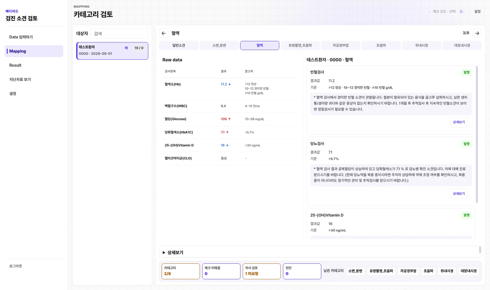
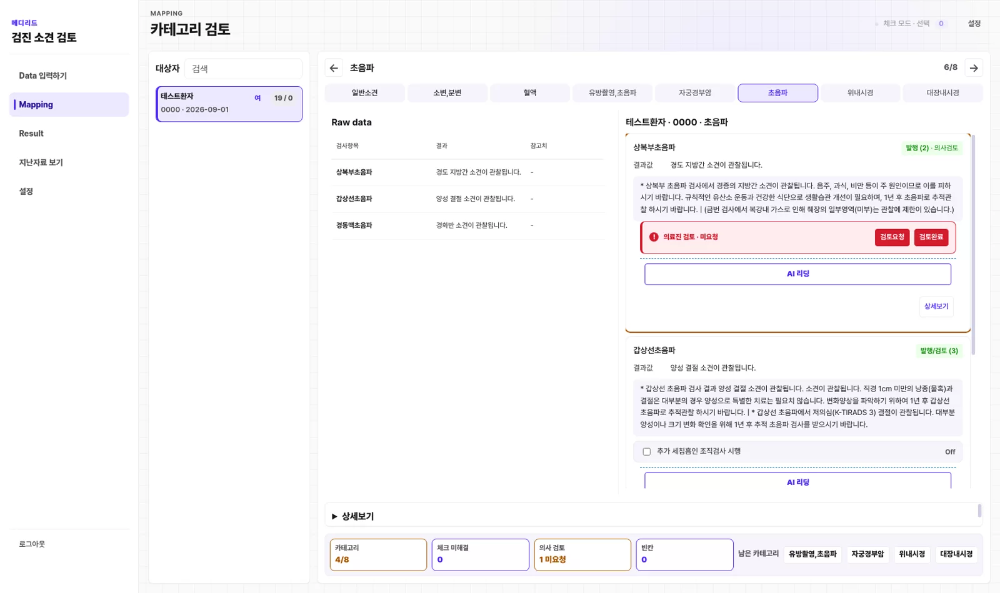
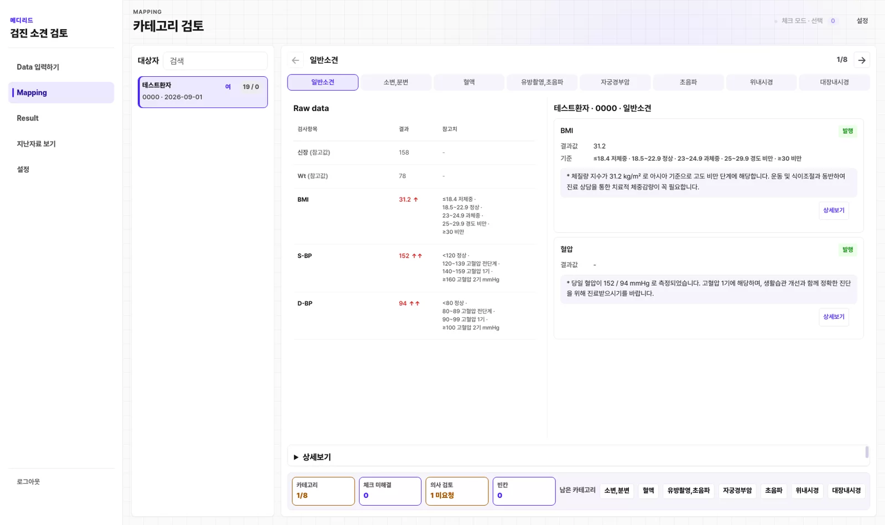
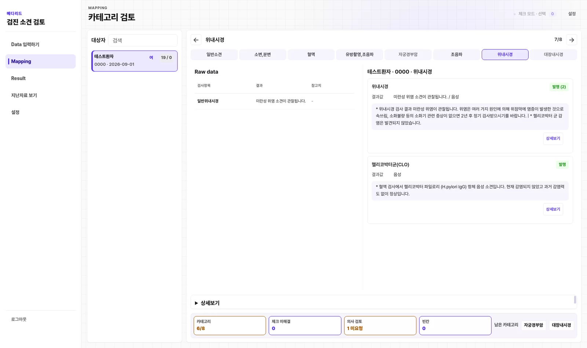
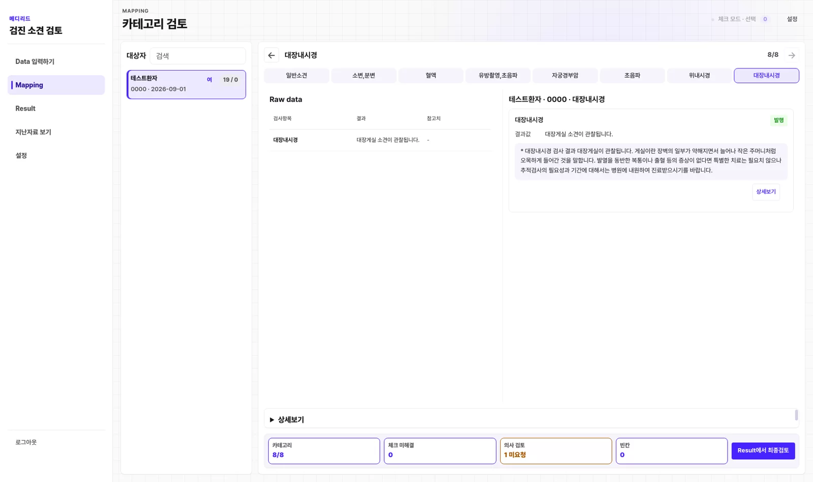
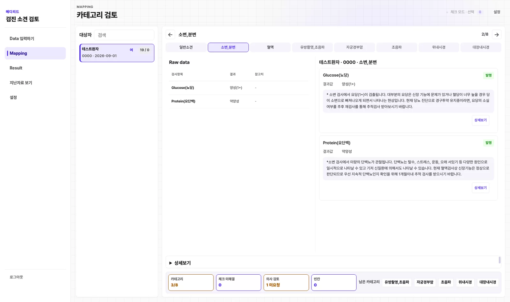
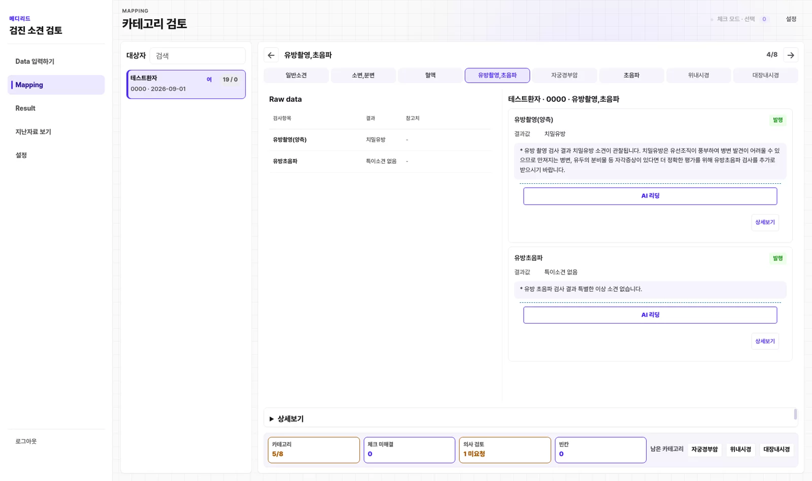
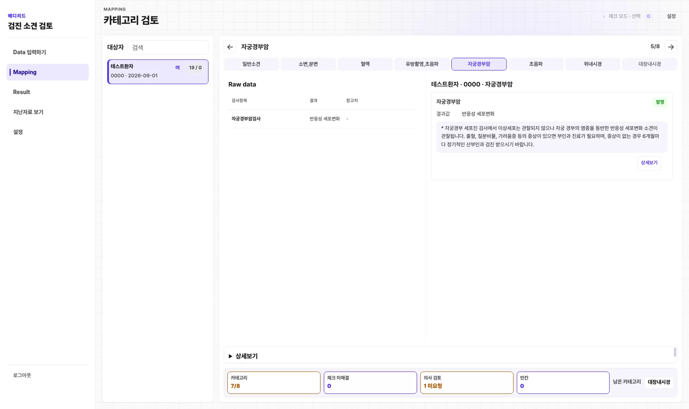
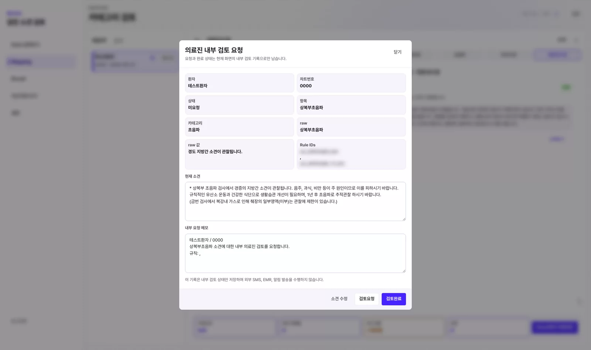
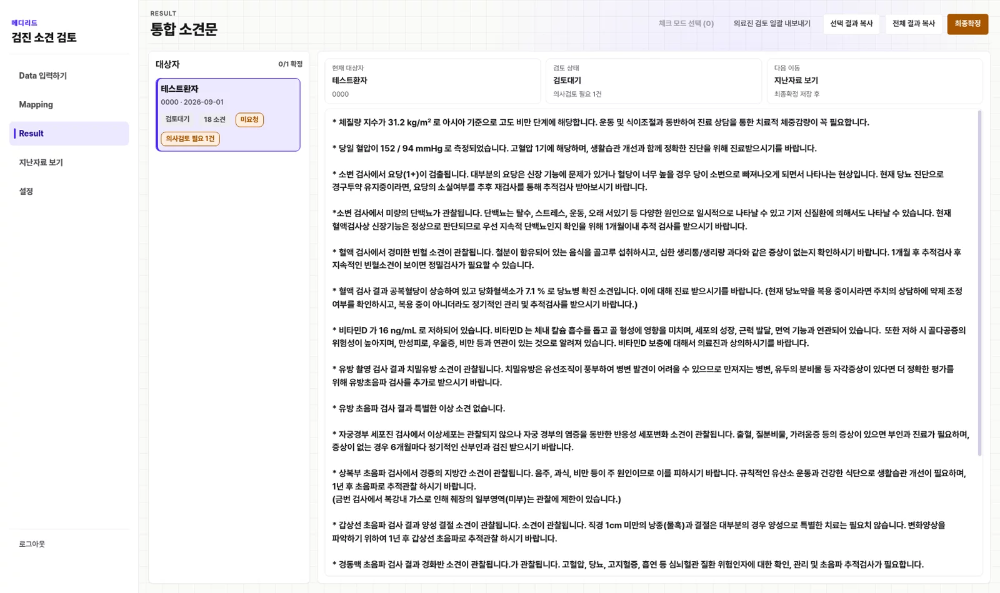

카테고리별 소견
검진 카테고리, 하나의 흐름에
원본 raw 데이터와 생성된 소견을 나란히 확인합니다. 아래는 합성 데이터로 찍은 실제 앱 화면입니다.







검진 워크플로우 그대로
검진 소견, 입력부터 발행까지
데이터 입력 → 자동 매핑 → 사람 확인 → 발행. 익숙한 흐름은 유지하고, 반복 작업만 덜어냅니다. 아래는 실제 앱 화면으로 만든 데모입니다.
데이터 입력
자동 매핑
소견 확인
AI 보완
의료진 검토
내보내기
데이터 입력
검진 파일을 끌어다 놓으면 실제 데이터 처리가 시작됩니다.
왜 메디리드인가
빠르고, 근거 있고, 사람이 통제하는
룰 + AI 이중 검증
규칙이 먼저 결정론적으로 판정하고, 규칙이 닿지 않는 영역은 AI가 소견 초안을 보완합니다.
근거 추적
모든 소견에 규칙 ID와 조건, 참조범위가 남습니다. 왜 이 소견이 나왔는지 다시 확인할 수 있습니다.
안전장치
빈칸, 중복 라벨, 성별 불일치를 자동으로 경고합니다. 발행 전에 위험 요소를 먼저 확인합니다.
도입 효과
숫자로 보는 메디리드
356
적용 규칙
카테고리별로 검증된 규칙이 소견을 판정합니다.
8
검진 카테고리
일반소견부터 대장내시경까지 한 흐름에서 처리합니다.
100%
근거 추적
발행된 모든 소견에 규칙과 조건이 기록됩니다.
비교
수기 작성 vs 메디리드
| 수기 작성 | 메디리드 | |
|---|---|---|
| 소견 작성 | 검사마다 사람이 직접 입력 | raw 입력 시 규칙이 자동 발행 |
| 근거 추적 | 작성자 기억에 의존 | rule_id · 조건 · 참조범위 자동 기록 |
| 룰이 불완전할 때 | 사람이 처음부터 다시 작성 | AI가 소견 초안을 보완 (룰 + AI 2중) |
| 오탐 관리 | 전 항목을 사람이 재확인 | 규칙 검증 + 중복·성별 안전장치 |
| 사람 개입 | 모든 항목 | 확인 필요 항목만 |
| 최종 검토 | 담당자 개인 판단 | 의료진 검토 후 확정 · 내보내기/발송 |
| 이력·감사 | 별도 문서로 관리 | 검증 결과 자동 저장 |
| 규칙 변경 | 담당자 요청 후 반영 | UI에서 즉시 편집 |
검증 엔진
룰이 먼저, AI가 보완합니다
메디리드는 규칙을 먼저 태웁니다. 참조범위 판정 → 조건 매칭 → 성별 필터 → 중복 발행 방지 → 템플릿 렌더링을 결정론적으로 처리하고, 규칙이 닿지 않는 영역은 AI가 판독문을 읽어 소견 초안을 만듭니다. 그 위에 의료진 검토가 얹혀 최종 확정됩니다.
- 규칙 우선 — 같은 입력은 같은 결과
- AI 보완 — 룰이 불완전한 영역의 소견 초안 생성
- 의료진 확정 — 검토 항목은 사람이 최종 판단
만든 방식
의사의 부담은 덜고, 판단은 의사가
의사가 직접 만들었습니다
규칙은 임상 가이드라인과 참조범위를 근거로 의사가 직접 작성하고 검수했습니다. 근거 없는 추측 대신, 판단의 이유가 남는 규칙으로 소견을 만듭니다.
직원이 쓰고, 의사가 확정합니다
가이드라인 기반 규칙이 1차 판단을 대신하므로 의사가 아닌 직원도 사용할 수 있습니다. 의료진이 봐야 할 항목은 모아서 넘기고, 최종 검토는 의사가 확정합니다.
한 화면에서
검토에 필요한 모든 화면
원본 수치, 생성 소견, 확인 항목, 결과와 이력까지. 화면 전환 없이 한 곳에서 확인합니다.
Raw ↔ 결과 대조
원본 수치와 생성 소견을 나란히 놓고 바로 비교합니다.

직원 확인 · 의료진 컨펌
사람이 판단해야 할 항목만 모아 확인합니다.

결과 · 이력
최종 소견을 확인하고 과거 검증 결과를 다시 봅니다.
보안 · 신뢰
환자 데이터는 안전하게
검진 데이터는 민감합니다. 메디리드는 데스크톱 앱에서 처리하고, 결과를 결정론적으로 만들어 통제 가능하게 유지합니다.
-
데스크톱 로컬 처리
앱에서 직접 데이터를 처리하고 결과를 관리합니다.
-
결정론적 규칙 엔진
추측이 아니라 규칙으로 판정해 결과가 재현됩니다.
-
검증 이력 자동 저장
누가 언제 무엇을 발행했는지 기록으로 남습니다.
요금
규모에 맞는 두 가지 요금제
개원의·검진센터부터 병원까지, 동일한 소견 품질을 제공합니다.